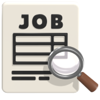
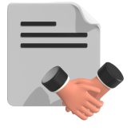

HOME > 인재채용 > 인사제도
인사제도
지원자들이 보유하고 있는 역량과 웅진에서 발휘하고 싶은 열정이 씨줄이라면, 웅진이 추구하는 인재의 역량은 날줄이라고 할 수 있습니다.
이 씨줄과 날줄의 첫만남이 바로 웅진의 채용입니다.
웅진은 채용은 웅진의 인재상을 바탕으로 한 또또사랑 실천역량과 일사랑역량 모델에 근거하여 모집부터 채용까지 역량기반의 일관성 있는 선발 체계를 운영하고 있습니다.
-
01
지원서 접수 -
02
서류전형 -
03
1차 인터뷰
(팀장급, PT) -
04
2차 인터뷰
(본부장급) -
05
최종합격
-
- 지원서 접수
- 신입 채용 지원자는 정해진 기간에 채용홈페이지에 접속하여 온라인 입사지원서를 접수해야 합니다. 지원서 접수 시 본인의 적성과 흥미에 따른 관심 직무를 선정하고, 해당 직무가 속한 직무군을 선택하여 지원서를 최종 접수합니다. 본인의 역량이 충분히 전달될 수 있도록 지원서의 내용을 구체적으로 작성하기를 권장합니다.
-

- 서류전형
- 지원서의 각 항목에 기재된 내용과 자기소개서를 바탕으로, 지원자가 지원직무와 회사에 적합한 자격, 경험, 열정을 가진 인재인지 여부를 인사담당자와 실무평가자가 종합적으로 평가합니다. 자기소개서의 내용은 꼼꼼히 읽고 지원자의 역량, 경험, 그리고 마음가짐을 이해하기 위해 노력하고 있습니다.
-
- 면접전형
- 1차 인터뷰(팀장급 인터뷰: 직무주제 PT 및 인터뷰) 실제 업무를 수행하기 위한 능력과 열정, 전략적 사고역량, 실무역량 등을 평가하는 1차 면접이 진행됩니다. 면접 진행 방식은 다 대 다 방식을 원칙으로 하며, 평가자가 출제한 직무 관련 주제문을 토대로 진행되는 PT 면접이 선행될 수 있습니다. [총 인터뷰 소요시간: 1시간~1시간 30분]
- 2차 면접(본부장급 인터뷰: 종합 인성/역량 평가) 1차 면접 합격자를 대상으로 2차 임원진(또는 본부장급) 면접을 진행하여 최종합격자를 선발합니다. 미래가능성과 성장가치 등 역량과 인성을 종합 평가하는 절차입니다.[소요시간: 1시간]
-
- 최종합격
- 최종 면접에 합격하신 분은 웅진식품의 신입사원으로 입사하게 되며, 입사 후 인사담당자 OJT 및 신규입사자 입문교육을 진행하게 됩니다. 특히 신입 입사의 경우, 채용연계형 인턴(유기계약직) 또는 수습기간 3개월이 선행될 수 있으며, 인턴십의 경우 인턴기간 활동을 통해 정규직 전환여부를 최종 평가합니다.
-
01
지원서 접수 -
02
서류전형 -
03
1차 인터뷰
(팀장급) -
04
2차 인터뷰
(본부장급, PT) -
05
최종합격
-

- 영입 프로세스
- 세부사항(대상 및 자격요건 등)은 경력사원 영입 시 게시되는 경력사원 모집공고를 참고하시기 바랍니다. 인재영입 공고 보러가기→
-
- 서류전형
- 기본적인 채용 프로세스는 서류전형, 인터뷰(1차, 2차)전형으로 진행됩니다.
특히 2차 인터뷰에서 지원자분의 경력 사항에 대하여 PT하고 Q&A 하는 시간을 갖습니다. 1차 인터뷰 합격 안내와 함께 사전 준비기간 제공 [약 2~3일]